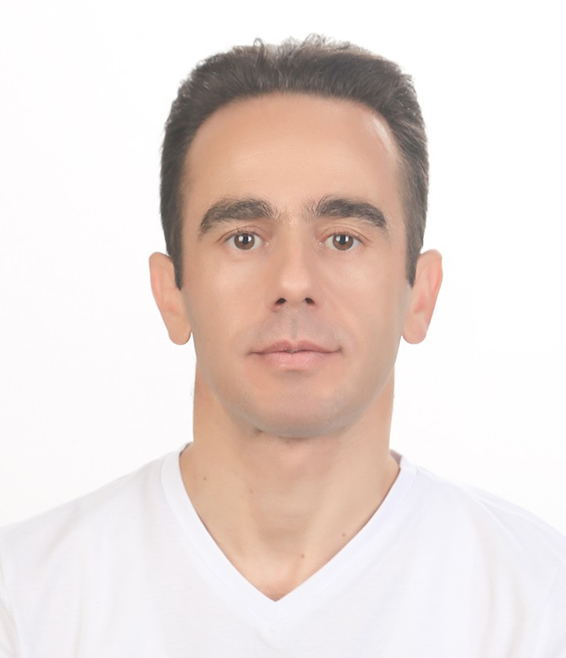

41°44′K 27°13′D — Kırklareli, Türkiye
Siber uzay uluslararası güvenliği nasıl dönüştürüyor?
Siber uzay, sanal olarak tanımlanmakla birlikte fiziksel altyapılara dayanan yapısı nedeniyle devletlerin jeopolitik çıkarlarını sürdürdüğü bir rekabet alanına dönüşmüştür. Bu dönüşümü egemenlik algısının yeniden inşası, güç projeksiyonunun dijitalleşmesi ve hukuki boşlukların stratejik araçsallaştırılması ekseninde incelemekteyim. Alanı hem uluslararası ilişkiler kuramı hem de teknik boyutlarıyla ele almam, akademik altyapımın ve çalışma tecrübemin ortak sonucudur.

Portre fotoğrafı burada görünecek.
Dosyayı şu adla ekleyin:
foto/portre.jpg
Kırklareli
Türe göre süzebilir ya da başlık, dergi ve anahtar kelime içinde arayabilirsiniz.
Akademik iş birliği
Ortak çalışma önerileri, hakemlik talepleri ve çalışmalarıma ilişkin sorularınız için aşağıdaki adreslerden ulaşabilirsiniz.
Akademik profiller